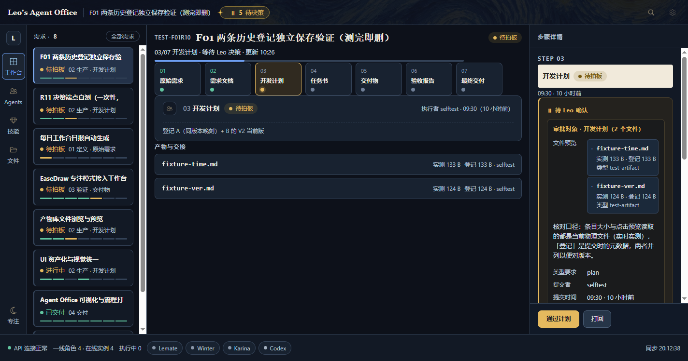
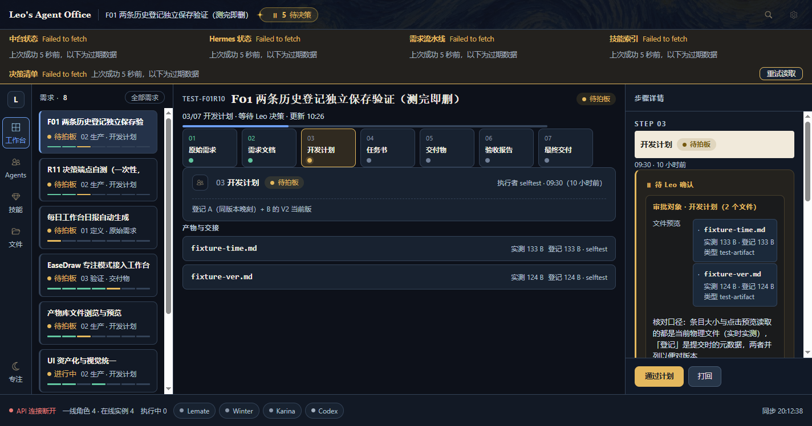
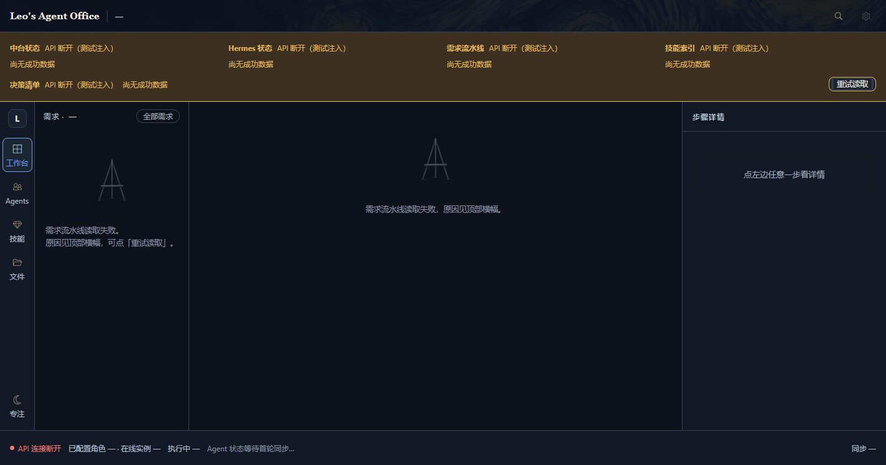
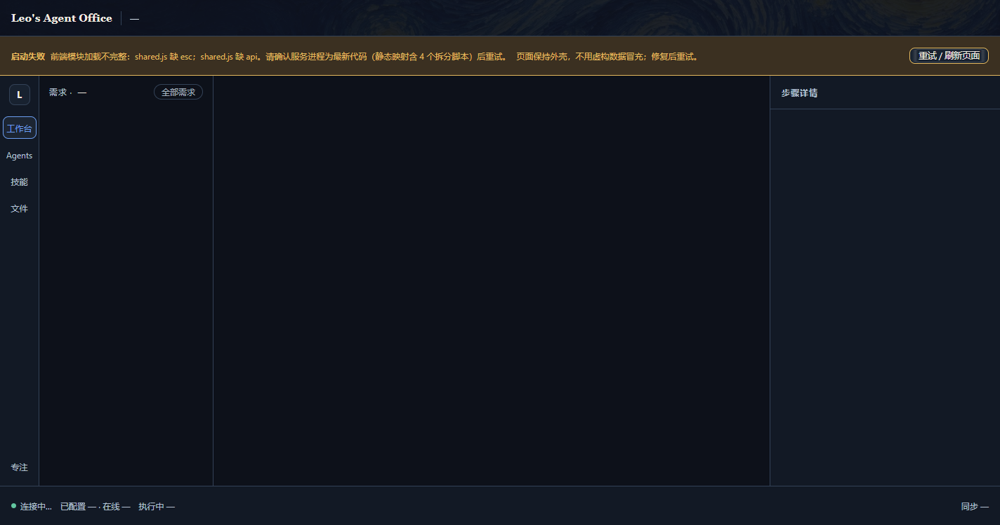
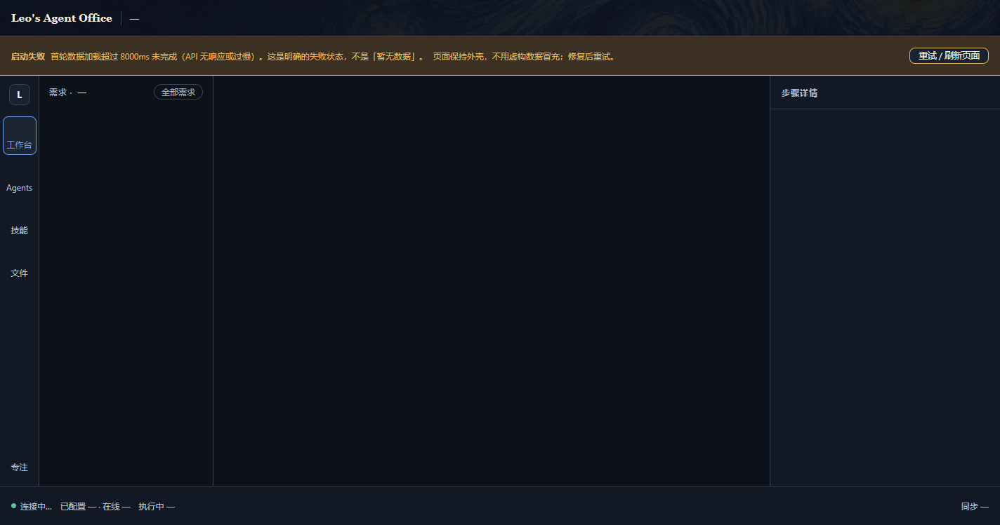

G04 验证报告｜修复四个页面全部空白的启动回归
2026-11-16 · 严重程度：致命 · 验证方式：Chrome 138 headless + 原生 CDP（getComputedStyle / getBoundingClientRect 真实读数）
结论：通过 —— 4 组测试 + 1 个补充场景全部实测通过
验证脚本 g04-verify.mjs（可重复执行）｜截图证据 6 张
一、改了什么
| 文件 | 改动 | 备份 |
|---|
web/server.js | 补 1 行导入：createDecisionCore（G02 拆分时漏导入，任何重启都 ReferenceError 崩溃） | git 工作区 |
web/app.js | ① 启动护栏：四模块关键函数缺失即挂失败横幅并中止；② 8s 看门狗：首轮 flow 8000ms 未到挂失败态，成功即撤销；③ 启动段 try/catch，异常不再让页面永久空白 | app.js.bak-g04 |
web/app.css | 新增 #data-banner.boot-fail（G04 规定样式） | app.css.bak-g04 |
根因（两层）：① 线上 8090 是 G02 拆分之前启动的旧进程，对 4 个拆分脚本一律 404 → app.js 引用未定义函数即死 → 启动链路从未执行；② 就算重启也起不来：server.js 漏导入工厂函数，启动即崩。
禁止项核查：所有失败路径均不渲染虚构零值——首轮失败需求数保持占位「—」，运行中断开保留上次真实数据（8）并标注「过期数据」。
二、验证了什么
T1 正常服务启动 PASS
- 页面需求数
#reqs-count = 8，与页内实取 /api/office/flow 的 tasks.length = 8 一致（TEST-F01R10 / TEST-R11 / OFFICE-V3 / OFFICE-V4 / T-DAILY / T-EASEDRAW / T-PRODUCT / T-SKILLHUB）
- 七步流水线
.track-node = 7：01 原始需求·完成 → 02 需求文档·完成 → 03 开发计划·待拍板 → 04~07 等待
- 失败横幅隐藏；
window.__uiErrors = 0；控制台 0 条错误；状态栏「API 连接正常」
T2a API 断开（运行中服务被杀）PASS
- 横幅挂出「需求流水线 Failed to fetch 上次成功 5 秒前，以下为过期数据」；状态栏「API 连接断开」
- 需求数保持 8（上次真实数据，未造假为 0）；中央区 604 字符内容仍在——页面不空白
T2b API 断开（首轮即 502）PASS · 失败态样式实测
| 属性 | 实测值（getComputedStyle） | 要求 |
|---|
| font-size | 12px | 12px ✅ |
| line-height | 18px | 18px ✅ |
| color | rgb(229,185,94) = #E5B95E | #E5B95E ✅ |
| background-color | rgb(59,48,33) = #3B3021 | #3B3021 ✅ |
| padding（四边） | 16px/16px/16px/16px | 16px ✅ |
横幅尺寸 getBoundingClientRect = 1424×112；__uiErrors = 0；无未捕获异常；需求数为占位「—」而非假「0」。
T3 JS 模块异常（shared.js 临时改名 → 404）PASS
- 启动护栏挂出：「启动失败 前端模块加载不完整：shared.js 缺 esc；shared.js 缺 api……」+ 重试按钮；样式五项全部达标（同上表）
- 唯一 1 条未捕获异常是护栏故意抛出的中止信号（带
[G04] 标记，app.js:56）；页面不再永久空白；测试后 shared.js 已还原
T4 API 延迟 9.5s（> 8000ms）PASS
- 8.3s：看门狗挂出「首轮数据加载超过 8000ms 未完成……这是明确的失败状态，不是『暂无数据』」，样式五项全部达标
- 12.8s（迟到数据到达后）：七步流水线恢复（
.track-node = 7）、需求数 = 8、失败态自动让位（hidden=true）、__uiErrors = 0、无未捕获异常
控制台事件全量：5 个场景中仅 T3 有 1 条带 [G04] 标记的主动中止异常；T1/T2a/T2b/T4 均为 0 条。
环境现状：8090 已恢复常驻（须带 PORT=8090 启动，默认 8080 被占）；静态资源实测：app.js 123763 B、shared.js 10846 B、version.js 13833 B、approval.js 47105 B、files.js 36915 B、app.css 126334 B。
截图证据

T1 正常启动：8 需求 + 七步流水线

T2a 运行中断开：过期数据横幅

T2b 首轮 502：boot-fail 失败态

T3 模块缺失：启动护栏

T4 8s 看门狗超时态
T4 迟到数据到达后恢复
三、还差什么
- 改动未 commit：app.js / app.css / server.js 在工作区；另有 .bak 备份、验证脚本、6 张截图、本报告两类新文件，是否入库由 Leo 决定。
- T3 的 1 条 [G04] 中止异常是护栏设计的固有产物；若要求绝对零异常需把 app.js 改为惰性初始化结构，超出「只改这一处」边界，未动。
- Agents / 技能 / 文件三页依赖的模块函数在护栏白名单内（缺失同样挂失败态而非空白），但未对三页逐一截图留证。